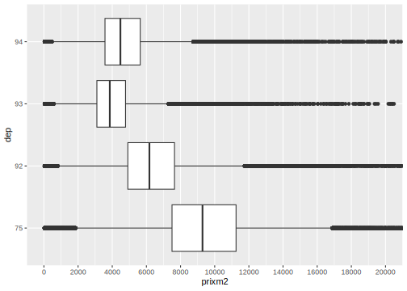
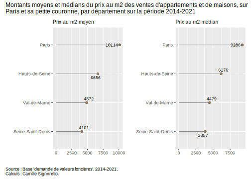

Section 9 Le package Ggplot en pratiques
Reprenons la base de données sur les demandes de valeurs foncières sur laquelle vous avez travaillez pour le devoir n°1, et commençons notre analyse descriptive des informations présentes dans cette base en construisant des graphiques pour répondre à certaines questions relatives aux prix auquels se sont vendus les appartements et maisons de la région de Paris et sa petite couronne entre 2014 et 2021. On pourra ainsi étudier l’évolution dans le temps de ces prix.
On va repatir pour cela de la table de données sur laquelle vous avez travaillé avec M. Grasland .
# Appelons la table si elle n'est pas déjà dans votre environnement
dvf <- readRDS("data/dvfclean_V3.RDS")
# Rappel des variables présentes et de leurs noms
names(dvf) [1] "id" "ann" "code" "nom" "type" "surf" "nbp" "prix"
[9] "prixm2" "dep" "nblots"9.1 Exemple de la construction d’un graphique pas à pas
On va chercher à représenter la distribution du prix du m2 des ventes d’appartements et de maisons selon le département. Notre variable principale est donc prixm2, et la variable “secondaire” ou fonction de la première est dep.
Pour représenter la distribution d’une variable quantitative ou continue, on peut utiliser un histogramme (ou/et une courbe de densité), mais comme ici on veut la représenter selon une autre variable peut-être serait-il mieux d’utiliser une boîte à moustache qui donnera les principaux éléments de description de la distribution de cette variable.
Nous avons déjà vu ces deux graphiques précédemment, mais reprenons-les pour voir dans le détail comment nous les construisons !
D’abord, on va créer une boîte à moustache pour représenter la distribution de la variable prixm2:
library(tidyverse)
dvf %>% ggplot() + aes(x = prixm2) + geom_boxplot()Comme il reste des valeurs aberrantes (cf. section 3.2.3. de la séance 1 de ce cours) malgré l’élagage déjà effectuée, on va utiliser une option pour mettre une échelle moins grande en abcisses. Plusieurs manières de faire existent, mais l’une d’entre elles équivaut à supprimer les valeurs, alors qu’une autre permet de les garder et juste de ne pas les faire apparaître sur le graphique, cela peut-être important si ensuite nous voulons ajoutons des statistiques comme la moyenne sur le boxplot, comme nous allons le voir.
Pour changer l’échelle des abcisses, une première manière de faire est d’utiliser l’argument scale_x_continuous() et l’option limits=c() pour indiquer les nouvelles valeurs de l’échelle, par exemple ici entre 0 et 20 000 :
dvf %>% ggplot() + aes(x = prixm2) + geom_boxplot() +
scale_x_continuous(limits=c(0,20000))Warning: Removed 3614 rows containing non-finite values
(`stat_boxplot()`).
Un avertissement est donné : 3 614 lignes ont donc été supprimées (sur 261 848 initiales), si nous ajoutons ensuite la moyenne, elle sera calculée sans ces 3 614 observations, cela peut donc changer les indicateurs de moyenne, voire de médiane, ce n’est donc pas rigoureux.
Utilisons la seconde méthode maintenant, avec l’option xlim() à intégrer dans la fonction coord_cartesian() qui fait l’équivalent d’un zoom sur le graphique :
dvf %>% ggplot() + aes(x = prixm2) + geom_boxplot() +
coord_cartesian(xlim=c(0,20000))Plus de “warning” ! Et donc plus de suppression de ligne et pas de modification des données initiales.
Ensuite, nous souhaitons représenter la distribution de cette variable selon les départements présents dans le champ (Paris et sa petite couronne) : nous allons pour cela ajouter dans l’aes() une variable y= ; et nous allons en profiter pour préciser un peu l’échelle des abscisses (réduire le “pas” avec l’option breaks=seq()) :
dvf %>% ggplot() + aes(x = prixm2, y=dep) + geom_boxplot() +
coord_cartesian(xlim=c(0,20000)) +
scale_x_continuous(breaks=seq(0,20000,2000))On voit déjà de nettes différents du prix au m2 entre les 4 départements, avec sans surprise Paris, pour laquelle la médiane est la plus forte.
Nous pouvons également ajouter la moyenne, puisqu’ici nous voyons de gauche à droite, le minimum, le 1er quartile, la médiane, le 3ème quartile, le maximum et les “outliers” (points aberrants selon les statistiques de la boxplot). Pour cela, il faut utiliser la “couche” statistiques de ggplot() avec la fonction stat_summary() et les options fun = mean pour la moyenne, geom = point pour qu’elle soit représentée par un point, color="gray50" pour qu’elle se différencie des autres points et soit en gris, et éventuellement size=2 pour jouer sur la taille du point.
# Pour infos, les options de `geom =` dans `stat_summary()` sont par exemple :
# "point", "pointrange", "crossbar", "bar" (cell-ci à ne pas utiliser ici néanmoins !)
dvf %>% ggplot() + aes(x = prixm2, y=dep) +
geom_boxplot() +
stat_summary(fun=mean, geom="point", color="gray50", size=2) +
coord_cartesian(xlim=c(0,20000)) +
scale_x_continuous(breaks=seq(0,20000,2000)) On observe ainsi des différences entre la moyenne et la médiane pour chacun de ces départements, à chaque fois la moyenne étant plus élevée que la médiane puisque tirée par des valeurs plus souvent très élevées que très faibles (plus de points au-delà du maximum que l’inverse).
On peut aussi vouloir enlever les outliers avec l’option outlier.shape de geom_boxplot() comme ceci : geom_boxplot(outlier.shape = NA).
On peut vouloir encore ordonner l’affichage des départements par ordre décroissant de la médiane ou de la moyenne (ordre décroissant ici = valeur la plus élevée en haut du graphique). Nous pouvons, entre autres, utiliser pour cela la fonction fct_reorder() du package forcats déjà présenté dans la section 3.2 de ce cours (Séance 1) : nous pouvons alors directement l’intégrer dans l’aes de ggplot dans la variable en ordonnée y=fct_reorder(), il faut alors entre parenthèses mettre la variable utilisée en ordonnée, suivie de la variable par laquelle on ordonne (la même que celle utilisée dans x=). Utilisée dans un boxplot, cela ordonne par défaut selon la médiane ; si on veut que les régions soient ordonnées par la moyenne, il faut rajouter l’option .fun=mean dans la fonction fct_reorder(), cf. 2ème graphique ci-dessous.
dvf %>% ggplot() +
aes(x = prixm2, y=fct_reorder(dep, prixm2)) +
geom_boxplot() +
stat_summary(fun=mean, geom="point", color="gray50", size=2) +
coord_cartesian(xlim=c(0,20000)) +
scale_x_continuous(breaks=seq(0,20000,2000))Ordonnée par la moyenne, cela donnerait ceci :
dvf %>% ggplot() +
aes(x = prixm2, y=fct_reorder(dep, prixm2, .fun=mean)) +
geom_boxplot() +
stat_summary(fun=mean, geom="point", color="gray50", size=2) +
coord_cartesian(xlim=c(0,20000)) +
scale_x_continuous(breaks=seq(0,20000,2000)) Ici, cela ne change rien, la “hiérarchie” des prix au m2 les plus élevés sont les mêmes selon qu’on considère la moyenne ou la médiane.
Ici, cela ne change rien, la “hiérarchie” des prix au m2 les plus élevés sont les mêmes selon qu’on considère la moyenne ou la médiane.
Nous arrivons à un graphique intéressant, il faut maintenant améliorer la description autour : noms des axes, titres, légende informative sous le graphique (avec notamment un avertissement sur les valeurs non affichées sur le graphique), éventuellement un peu de couleur (avec fill= non pas dans l’aes() mais dans la fonction geom_boxplot() pour qu’elle soit identique quel que soit le département), etc.
Cela se fait avec la fonction labs(), et ensuite la fonction theme().
Une petite astuce pour les titres pour qu’ils ne soient pas coupés sur le graphe : \n collé à un mot (sans espace) permet de mettre à la ligne à partir de ce mot !
dvf %>% ggplot() +
aes(x = prixm2, y=fct_reorder(dep, prixm2, .fun=mean)) +
geom_boxplot(outlier.shape = NA, fill="khaki") +
stat_summary(fun=mean, geom="point", color="gray50", size=2) +
coord_cartesian(xlim=c(0,20000)) +
scale_x_continuous(breaks=seq(0,20000,2000)) +
labs(title="Distribution du prix au m2 des ventes d'appartements et de maisons dans Paris et sa \npetite couronne sur la période 2014-2021",
x="Prix au m2", y="Département",
caption="Remarques : Les valeurs au-delà de 20 000€ au m2 ne sont pas affichées ; les points au-delà du minimum et maximum \nnon plus ; les points en gris représentent la moyenne pour chaque département. \nSource : Base 'demande de valeurs foncières', 2014-2021. \nCalculs : Camille Signoretto.") +
theme(plot.caption = element_text(hjust=0),
plot.title = element_text(size=12),
axis.title.x = element_text(size=10),
axis.title.y = element_text(size=10))Allons plus loin et testons d’autres types de graphiques.
Peut-être, peut-on utiliser un graphe en violon à la place du boxplot ?
dvf %>% ggplot() +
aes(x = prixm2, y=fct_reorder(dep, desc(prixm2), .fun=mean)) +
geom_violin(fill="khaki") +
stat_summary(fun=mean, geom="point", color="gray50", size=2) +
scale_x_continuous(breaks=seq(0,20000,2000)) +
coord_flip(xlim=c(0,20000)) +
labs(title="Distribution du prix au m2 des ventes d'appartements et de maisons dans Paris et sa \npetite couronne sur la période 2014-2021",
x="Prix au m2", y="Département",
caption="Remarques : Les valeurs au-delà de 20 000€ au m2 ne sont pas affichées ; les points au-delà du minimum et \nmaximum non plus ; les points en gris représentent la moyenne pour chaque département. \nSource : Base 'demande de valeurs foncières', 2014-2021. \nCalculs : Camille Signoretto.") +
theme(plot.caption = element_text(hjust=0),
plot.title = element_text(size=12),
axis.title.x = element_text(size=10),
axis.title.y = element_text(size=10))C’est assez intéressant car cela permet de mieux voir (encore) le type de distribution, on observe par exemple que le 93 est le département où le plus gros des ventes se trouve autour de la médiane, contrairement à Paris dont le violon est très étiré ce qui dénote une grande hétérogénéité du prix au m2 des ventes.
Voilà un premier graphique construit avec la grammaire de ggplot().
À vous maintenant de construire vous-mêmes les graphiques qui vous sont suggérés dans la section suivante !
9.2 D’autres exemples à travers des exercices
9.2.1 Distribution du prix au m2 pour les appartements, selon les arrondissements de Paris
Construisez le même type de graphique mais cette fois pour les seuls appartemments et selon les arrondissements de la ville de Paris. N’hésitez pas à changer les options pour le mettre à votre goût !!
dvf %>% filter(dep=="75" & type=="Appartement") %>%
ggplot() +
aes(x = prixm2, y=fct_reorder(nom, prixm2, .fun=mean)) +
geom_boxplot(outlier.shape = NA, fill="khaki") +
stat_summary(fun=mean, geom="point", color="gray50", size=2) +
coord_cartesian(xlim=c(0,24000)) +
scale_x_continuous(breaks = seq(0,24000,2000)) +
labs(title="Distribution du prix au m2 des ventes d'appartements selon les \narrondissements de Paris sur la période 2014-2021",
x="Prix au m2", y="Département",
caption="Remarques : Les valeurs au-delà de 24 000€ au m2 ne sont pas affichées ; les points au-delà \ndu minimum et maximum non plus ; les points en gris représentent la moyenne pour chaque \narrondissement. \nSource : Base 'demande de valeurs foncières', 2014-2021. \nCalculs : Camille Signoretto.") +
theme(plot.caption = element_text(hjust=0),
plot.title = element_text(size=12),
axis.title.x = element_text(size=10),
axis.title.y = element_text(size=10))9.2.2 Comparaison des montants moyen et médian du prix au m2, par département de Paris et sa petite couronne
Construisez maintenat un graphique mettant côte à côte deux graphes en bâtons représentant respectivement le prix au m2 moyen et le prix au m2 médian des ventes d’appartements et de maisons par département.
Pour vous aider si besoin, réfléchissez par étapes :
- non obligatoire, mais il est bien de commencer par créer une variable avec les noms des départements et non leur numéro ;
- créer un premier graphe que vous assignerez à un nouvel objet et qui représentera celui de la moyenne par département ;
- vous pouvez pour cela créer une nouvelle variable qui constituera la moyenne pour chaque département (un conseil : arrondir à l’unité) ;
- sélectionnez les variables qui seront utilisées dans le graphique et vérifier (ou corriger sinon) qu’il n’y ait pas des doublons (lignes identiques) car cela peut fausser le graphique ensuite ;
- construisez le graphique avec
ggplot()et la bonne fonctiongeom_***(), les données seront affichées par ordre décroissant ; - faîtes de même pour la médiane par région ;
- vous pouvez ensuite mettre ces graphiques côte à côté avec le package
patchwork(qu’il vous faudra probablement installer si c’est la première fois que vous l’utilisez), recherchez sur internet comment faire ensuite (c’est très simple !), puis ajouter un titre et une légende générale avec la fonctionplot_annotation().
dvf <- dvf %>%
mutate(nom_dept=as.factor(case_when(dep==75 ~ "Paris",
dep==92 ~ "Hauts-de-Seine",
dep==93 ~ "Seine-Saint-Denis",
dep==94 ~ "Val-de-Marne")))
p1 <- dvf %>% group_by(nom_dept) %>%
mutate(moy_prixm2 = round(mean(prixm2),0)) %>%
select(moy_prixm2, nom_dept) %>%
unique() %>%
ggplot() + aes(x = fct_reorder(nom_dept, desc(moy_prixm2)), y = moy_prixm2) +
geom_bar(stat="identity", fill="honeydew") +
geom_text(aes(label = moy_prixm2), position = position_stack(vjust = 0.5), color="gray25", size=2.8) +
labs(title = "Moyenne", x = " ", y = " ") +
theme(axis.text.x = element_text(angle=90, hjust=1, size=9),
plot.title = element_text(size=10.5))
p2 <- dvf %>% group_by(nom_dept) %>%
mutate(median_prixm2 = round(median(prixm2),0)) %>%
select(median_prixm2, nom_dept) %>%
unique() %>%
ggplot() + aes(x = fct_reorder(nom_dept, desc(median_prixm2)), y = median_prixm2) +
geom_bar(stat="identity", fill="honeydew") +
geom_text(aes(label = median_prixm2), position = position_stack(vjust = 0.5), color="gray25", size=2.8) +
labs(title = "Médiane", x = " ", y = " ") +
theme(axis.text.x = element_text(angle=90, hjust=1, size=9),
plot.title = element_text(size=10.5))
library(patchwork)
(p1 + p2) +
plot_annotation(title = "Montants moyens et médians du prix au m2 des ventes d'appartements et de maisons sur \nParis et sa petite couronne, par département ",
caption = "Source : Base 'demande de valeurs foncières', 2014-2021. \nCalculs : Camille Signoretto.",
theme = theme(plot.title = element_text(size = 12))) &
theme(plot.caption = element_text(hjust = 0))On retrouve bien les mêmes résultats que précédemment mais en ayant les valeurs précises affichées des moyennes et médianes, on retrouve bien Paris en tête que ce soit en moyenne et médiane du prix au m2 des ventes d’appartements et de maisons. On perd toutefois la “tête” de l’ensemble de la distribution.
Il faut vraiment se demander quel type de public serait visé par ces informations, si c’est le grand public, la moyenne et la médiane suffisent si l’on veut montrer qu’il y a quand même une certaine dispersion des valeurs selon les ventes, souvent seule la moyenne étant représentée.
geom_*** qui changent…
library("ggrepel")
p3 <- dvf %>% group_by(nom_dept) %>%
mutate(moy_prixm2 = round(mean(prixm2),0)) %>%
select(moy_prixm2, nom_dept) %>%
unique() %>%
ggplot() + aes(x = moy_prixm2,
y = fct_reorder(nom_dept, moy_prixm2)) +
geom_point(color="burlywood4", size=2) +
geom_segment(aes(x=0, xend=moy_prixm2,
y=fct_reorder(nom_dept, moy_prixm2),
yend=fct_reorder(nom_dept, moy_prixm2)),
color="snow4") +
geom_text_repel(aes(label = moy_prixm2), size = 3) +
labs(title = "Prix au m2 moyen", x = " ", y = " ") +
theme(plot.title = element_text(size=10),
axis.text.y = element_text(size=9))
p4 <- dvf %>% group_by(nom_dept) %>%
mutate(median_prixm2 = round(median(prixm2),0)) %>%
select(median_prixm2, nom_dept) %>%
unique() %>%
ggplot() + aes(x = median_prixm2,
y = fct_reorder(nom_dept, median_prixm2)) +
geom_point(color="burlywood4", size=2) +
geom_segment(aes(x=0, xend=median_prixm2,
y=fct_reorder(nom_dept, median_prixm2),
yend=fct_reorder(nom_dept, median_prixm2)),
color="snow4") +
geom_text_repel(aes(label = median_prixm2), size = 3) +
labs(title = "Prix au m2 médian", x = " ", y = " ") +
theme(plot.title = element_text(size=10),
axis.text.y = element_text(size=9))
(p3 + p4) +
plot_annotation(title = "Montants moyens et médians du prix au m2 des ventes d'appartements et de maisons, sur \nParis et sa petite couronne, par département ",
caption = "Source : Base 'demande de valeurs foncières', 2014-2021. \nCalculs : Camille Signoretto.",
theme = theme(plot.title = element_text(size = 12))) &
theme(plot.caption = element_text(hjust = 0))9.2.3 Evolution du prix moyen au m2 des ventes d’appartements à Paris
Changeons un peu de perspective et construisez cette fois un graphique montrant l’évolution du prix moyen au m2 des ventes d’appartements à Paris, de manière générale et ensuite selon 6 arrondissements choisis selon leur prix moyen mis en avant un peu plus haut : les 3 ayant les prix les plus élevés (6ème, 7ème et 8ème arrondissement), et les 3 ayant les prix les moins élevés (18ème, 19ème et 20ème arrdt).
De même, il faut procéder par étapes :
- ne sélectionner d’abord que le département Paris et les ventes d’appartements ;
- créer ensuite la variable de prix moyen au m2 selon l’année ;
- ne garder que ces variables, supprimer les lignes doublons le cas échéant ;
- construisez un graphique sous forme de courbes avec des points représentants les valeurs.
dvf %>% filter(dep==75 & type=="Appartement") %>%
group_by(ann) %>%
mutate(moy_prixm2 = round(mean(prixm2),0)) %>%
select(moy_prixm2, ann) %>%
unique() %>%
ggplot() + aes(x=ann, y=moy_prixm2) + geom_point() + geom_line(group=1) +
scale_y_continuous(limits=c(6000,12000), breaks = seq(6000,12000,500)) +
labs(title = "Evolution du prix moyen au m2 des appartements vendus à Paris", x = " ", y = " ",
caption = "Source : Base 'demande de valeurs foncières', 2014-2021. \nCalculs : Camille Signoretto. \nNote : l'axe des ordonnées ne commence qu'à 6000€") +
theme(plot.title = element_text(size=13),
plot.caption = element_text(hjust=0))Le prix moyen au m2 des appartements vendus à Paris a augmenté entre 2014 et 2021, l’évolution la plus forte étant entre 2016 et 2020. En 2014, les appartements se vendaient en moyenne à quasi 9000€ le m2, en 2021 cette moyenne s’élevait à plus de 11500€ le m2.
Regardons maintenant selon quelques arrondissements de Paris (dans les 6 mentionnés au-dessus), pour étudier si cette évolution est différente selon la position de l’arrondissement dans l’échelle des prix moyens.dvf %>% filter(dep==75 & type=="Appartement" & nom %in% c("Paris 6e Arrondissement", "Paris 7e Arrondissement",
"Paris 8e Arrondissement", "Paris 18e Arrondissement",
"Paris 19e Arrondissement", "Paris 20e Arrondissement")) %>%
group_by(ann, nom) %>%
mutate(moy_prixm2 = round(mean(prixm2),0)) %>%
select(moy_prixm2, ann, nom) %>%
unique() %>%
mutate(nom=factor(nom, levels = c("Paris 6e Arrondissement", "Paris 7e Arrondissement", "Paris 8e Arrondissement",
"Paris 18e Arrondissement","Paris 20e Arrondissement","Paris 19e Arrondissement"))) %>%
ggplot() + aes(x=ann, y=moy_prixm2, color=nom) + geom_line(aes(group=nom), linewidth=1) +
scale_y_continuous(limits=c(6000,18000), breaks = seq(6000,18000,1000)) +
labs(title = "Evolution du prix moyen au m2 des appartements vendus à Paris, \ndans les 3 arrondissements ayant les prix les plus élevés et les \n3 arrondissements ayant les prix les moins élevés", x = " ", y = " ", color="Arrondissement",
caption = "Source : Base 'demande de valeurs foncières', 2014-2021. \nCalculs : Camille Signoretto. \nNote : l'axe des ordonnées ne commence qu'à 6000€") +
theme(plot.title = element_text(size=12),
plot.caption = element_text(hjust=0))Pour tous les arrondissements, les prix moyens au m2 sont à la hausse entre 2014 et 2021, il ne semble pas y avoir de différences marquantes selon que cet arrondissement est déjà cher ou non. A noter toutefois des différences au moment de la crise sanitaire : alors que les 7ème et 8ème arrdts voient leur prix baisser, ce n’est pas le cas des 18, 19 et 20ème, et encore moins pour celui du 6ème arrdt dont la hausse entre 2020 et 2021 est très forte. De plus, alors que les évolutions sont assez linéaires pour les arrondissements les moins chers, ce n’est pas vraiment le cas pour les trois autres. Cela peut s’expliquer par un effet nombre de ventes ou plutôt ventes singulières ou non, il suffit qu’un ou deux appartements très chers aient été vendus dans le 6ème arrdt pour faire exploser d’un coup la moyenne… Il faudrait creuser plus en détails !
9.2.4 Top 5 du prix au m2 des ventes d’appartements selon les communes (ou arrondissements)
Enfin, construisez un graphique en bâtons indiquant les seules 5 premières communes ayant les prix moyens au m2 des ventes d’appartements les plus élevés, puis des ventes de maisons, et les mettre côte à côte.
p5 <- dvf %>%
filter(type=="Appartement") %>%
group_by(nom) %>%
summarise(moy_prixm2 = round(mean(prixm2))) %>%
arrange(desc(moy_prixm2)) %>% slice(1:5) %>%
ggplot() + aes(x = moy_prixm2, y = fct_reorder(nom, moy_prixm2)) +
geom_bar(stat="identity", fill="darkgoldenrod1") +
geom_text(aes(label=moy_prixm2), position = position_stack(vjust=0.5), size=2.8) +
labs(title="Ventes d'appartements",
x = "", y = " ") +
theme_classic() +
theme(legend.position = "none", plot.title=element_text(size=9),
axis.text.y = element_text(size=8),
axis.text.x = element_text(size=8),
axis.title.x = element_text(size=8))
p6 <- dvf %>%
filter(type=="Maison") %>%
group_by(nom) %>%
summarise(moy_prixm2 = round(mean(prixm2))) %>%
arrange(desc(moy_prixm2)) %>% slice(1:5) %>%
ggplot() + aes(x = moy_prixm2, y = fct_reorder(nom, moy_prixm2)) +
geom_bar(stat="identity", fill="coral1") +
geom_text(aes(label=moy_prixm2), position = position_stack(vjust=0.5), size=2.8) +
labs(title="Ventes de maisons",
x = "", y = " ") +
theme_classic() +
theme(legend.position = "none", plot.title=element_text(size=9),
axis.text.y = element_text(size=8),
axis.text.x = element_text(size=8),
axis.title.x = element_text(size=8))
(p5 + p6) +
plot_annotation(title = "Top 5 des communes ayant les prix moyens au m2 des ventes d'appartements ou de maisons les \nplus élevés sur la période 2014-2021",
caption = "Source : Base 'demande de valeurs foncières', 2014-2021. \nCalculs : Camille Signoretto.",
theme = theme(plot.title = element_text(size = 12))) &
theme(plot.caption = element_text(hjust = 0))concernant les appartements, on retrouve 5 arrondissements de Paris, ce qui est cohérent avec la hiérarchie mise en avant sur l’ensemble des départements précédemment ; mais c’est aussi le cas pour les maisons, dont les ventes sont pourtant moins nombreuses dans Paris, mais elles coûtent chères ! Seule la commune d’Issy-les-Moulineaux apparaît pour atteindre la 5ème position.